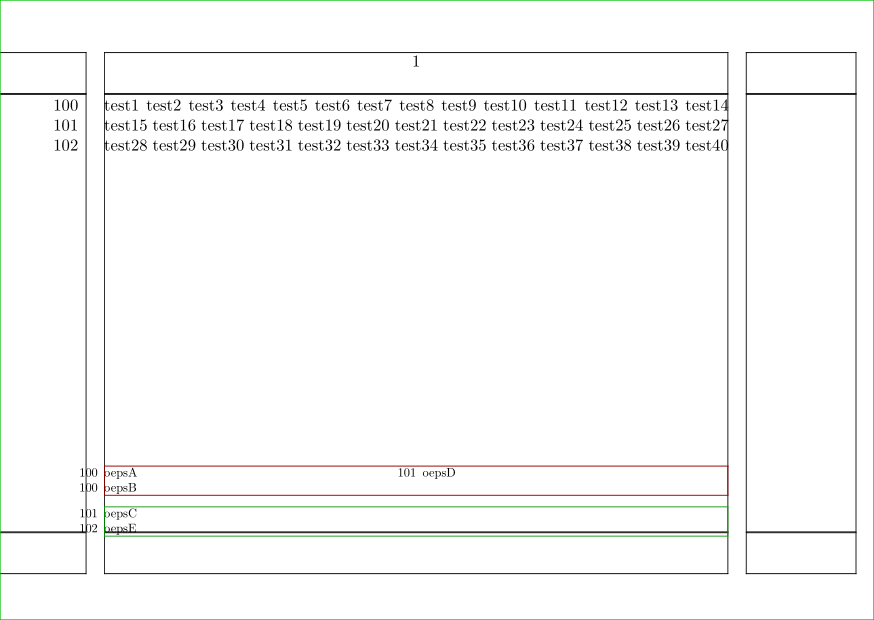

Contents
Summary
The instances of \linenote produce notes at the bottom of the page that reference a line number.
Instances
| \linenote |
Settings instance
Description
Examples
Example 1
-
\setuppapersize[A6,landscape][A6,landscape] \setupcolors[state=start] \setuptyping[option=color] \definelinenote[extralinenote][rule=off,frame=on,framecolor=darkgreen] \setuplinenote [linenote] [rule=off,frame=on,framecolor=darkred,n=2] \showframe \starttext \startlinenumbering[100] test1 \linenote {oepsA} test2 test3 test4 test5 test6 test7 test8 \linenote {oepsB} test9 test10 test11 test12 test13 test14 test15 \extralinenote {oepsC} test16 test17 test18 test19 test20 test21 test22 \linenote {oepsD} test23 test24 test25 test26 test27 test28 test29 \extralinenote {oepsE} test30 test31 test32 test33 test34 test35 test36 \stoplinenote [well] test37 test38 test39 test40 \stoplinenumbering \stoptext
- 